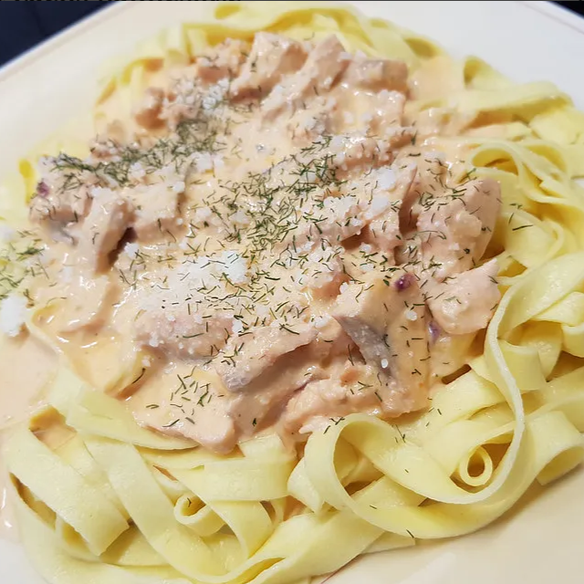

Nudeln mit Lachs-Sahnesoße


Zutaten:
(1 Portionen)
| 125 g | Bandnudeln |
| 100 g | Lachs |
| 50 g | Sahne |
| 25 g | Crème fraîche |
| 25 ml | Milch |
| ¼ | mittelgroße Zwiebel |
| ¼ | Knoblauchzehe |
| ¼ | Eigelb |
| etwas | gekörnte Brühe |
| Salz | |
| Öl | |
| Zitronensaft | |
| evtl. Dill |
Schritte der Anleitung:
- Die Bandnudeln nach Packungsangabe in Salzwasser garen.
- Währenddessen die Zwiebel und den Knoblauch in kleine Würfel schneiden und mit etwas Öl in einer Pfanne oder einem kleinen Brattopf glasig werden lassen. Den Lachs in mundgerechte Stücke schneiden und zu den Zwiebeln geben.
- Kurz bevor der Lachs ganz durchgegart ist, die Sahne, Milch und Crème fraîche dazugeben und mit der gekörnten Brühe und etwas Zitronensaft abschmecken. Etwas von der Sahnesoße in einen Becher füllen, das Eigelb dazugeben und verrühren. Die Mischung in die Sahnesoße rühren und kurz aufkochen lassen. Wer mag, kann die Soße mit Dill verfeinern.
- Die fertigen Nudeln abschütten und zusammen mit der Lachs-Sahnesoße servieren.
- Tipp: Gefrorenen Lachs in Stücke schneiden, bevor er ganz aufgetaut ist, das geht einfacher.